+ 1 + 1 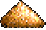 + 1 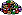
+ 1 + 1 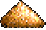 + 1 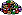
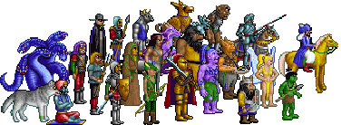
В этой таблице представлены все монстры появляющиеся в игре. Атака (Attack) и защита (Defense) суммируются с навыками героя и влияют на величину повреждений (damage) наносимых монстром или монстру. Пункты жизни показывают какие повреждения может перенести монстр прежде чем отдаст концы. Повреждения (damage) показывают сколько пунктов жизни может выбить у противника монстр одним ударом, при одинаковом умении атаки и защиты. Скорость определяет последовательность хода монстров в бою а также их ход по полю боя. Летающие монстры могут перелететь на любое незанятое место на поле боя.
| Монстр | Атака | Защита | Пункты жизни | Повреждения | Скорость | Раса | Цена | Особенности |
| 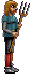 | 1 | 1 | 1 | 1 | Slow | Рыцарь | 20 | - |
| 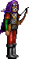 | 5 | 3 | 10 | 2-3 | Slow | Рыцарь | 150 | Стреляет, 12 выстрелов |
| 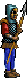 | 5 | 9 | 15 | 3-4 | Medium | Рыцарь | 200 | - |
| 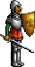 | 7 | 9 | 25 | 4-6 | Medium | Рыцарь | 250 | - |
| 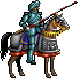 | 10 | 9 | 30 | 5-10 | Fast | Рыцарь | 300 | - |
| 11 | 12 | 50 | 10-20 | Fast | Рыцарь | 600 | Атакует дважды |
| 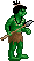 | 3 | 1 | 3 | 1-2 | Medium | Варвар | 40 | - |
| 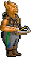 | 3 | 4 | 10 | 2-3 | Slow | Варвар | 140 | Стреляет, 8 выстрелов |
| 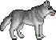 | 6 | 2 | 20 | 3-5 | Fast | Варвар | 200 | Атакует дважды |
| 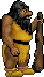 | 9 | 5 | 40 | 4-6 | Slow | Варвар | 300 | - |
| 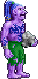 | 10 | 5 | 40 | 5-7 | Medium | Варвар | 600 | Стреляет, 8 выстрелов, регенерирует очки жизни в конце хода |
| 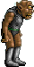 | 12 | 9 | 80 | 12-24 | Medium | Варвар | 750 | Атакует 2 поля, с вероятностью 20% парализует врага |
| 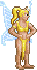 | 4 | 2 | 2 | 1-2 | Medium | Колдунья | 50 | Летает, враг не контратакует |
| 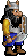 | 6 | 5 | 20 | 2-4 | Slow | Колдунья | 200 | 25% сопротивляемость магии |
| 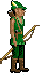 | 4 | 3 | 15 | 2-3 | Medium | Колдунья | 250 | Стреляет 2 раза за ход, 24 выстрела |
| 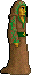 | 7 | 5 | 25 | 5-8 | Fast | Колдунья | 350 | Стреляет, 8 выстрелов |
| 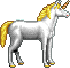 | 10 | 9 | 40 | 7-14 | Medium | Колдунья | 500 | С 20% вероятностью ослепляет врага |
| 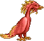 | 12 | 10 | 100 | 20-40 | Fast | Колдунья | 1500 + 1 | Летает, атакует 2 поля |
| 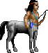 | 3 | 1 | 5 | 1-2 | Medium | Чародей | 60 | Стреляет, 8 выстрелов |
| 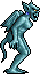 | 4 | 7 | 15 | 2-3 | Fast | Чародей | 200 | Летает |
| 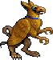 | 6 | 5 | 25 | 3-5 | Medium | Чародей | 300 | Летает, контратакует всегда |
| 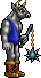 | 9 | 8 | 35 | 5-10 | Medium | Чародей | 400 | - |
| 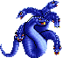 | 8 | 9 | 75 | 6-12 | Slow | Чародей | 800 | Атакует все поля вокруг себя, враг не контратакует |
| 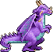 | 12 | 12 | 200 | 25-50 | Medium | Чародей | 3000 + 1 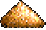 | Летает, атакует 2 поля, невосприимчив к магии |
| 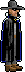 | 6 | 1 | 4 | 1-2 | Fast | Нейтральный | 50 | Враг не контратакует |
| 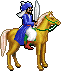 | 7 | 6 | 20 | 2-5 | Fast | Нейтральный | 200 | - |
| 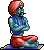 | 10 | 9 | 50 | 20-30 | Fast | Нейтральный | 650 + 1 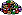 | Летает, с 10% вероятностью уничтожает половину отряда врага |
| 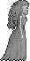 | 8 | 7 | 20 | 4-6 | Medium | Нейтральный | Нанять нельзя | Летает, каждый убитый враг превращается в духа |